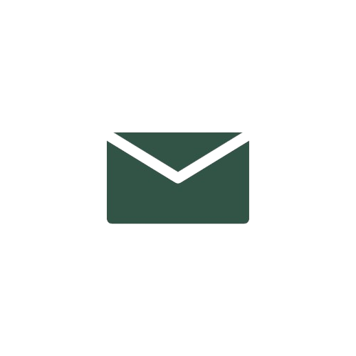

Spécialisations
-
Kinésithérapie
La kinésithérapie se concentre sur la résolution des problèmes de mouvement aigus et chroniques du système locomoteur.
En savoir plus -

Thérapie Manuelle
La thérapie manuelle, une spécialisation au sein de la kinésithérapie, implique une analyse approfondie et un traitement spécifique du système musculaire et articulaire, comprenant des mobilisations et des manipulations.
En savoir plus -

Rééducation Orthopédique et Sportive
Après une opération ou une blessure sportive, une approche active est essentielle. Le mouvement favorise le processus de rétablissement et est donc au cœur de notre traitement. Nous complétons cette approche active avec des techniques manuelles pour obtenir les meilleurs résultats possibles.
En savoir plus -

Maux de tête et problèmes de mâchoire
Les maux de tête fréquents et les problèmes temporo-mandibulaires ont un impact sur la qualité de vie. Notre thérapeute manuel peut vous aider à réduire ces problèmes.
En savoir plus -

VPPB & vertiges cervicaux
Nos tests spécifiques permettent de déterminer si vous souffrez de VPPB ou de vertige cervicogène, et nous proposons des traitements ciblés pour ces problèmes.
En savoir plus -

Rééducation de la main
La rééducation de la main est essentielle après une blessure à la main, une opération ou d'autres affections. Cette spécialité vise à restaurer la fonction de la main et du poignet, ainsi que la liberté de mouvement, la force et l'endurance.
En savoir plus
Bienvenue chez Manus
Où le corps et le mouvement vont de pair
Stéphanie Michel
L´objectif de la Pratique de Kinésithérapie Manus est d´atteindre et de maintenir votre santé optimale grâce à la prestation de kinésithérapie et de thérapie manuelle de haute qualité.
J´adopte toujours une approche personnalisée, soutenue par une expertise approfondie et une approche de traitement efficace.
Chez Manus, le patient est au cœur de tout ce que nous faisons. C´est pourquoi j´incorpore les connaissances de la thérapie manuelle, en mettant l´accent sur l´ensemble de la colonne vertébrale, pour assurer un traitement à 360° de votre corps.
Contact
Horaires d'ouvertures: Tous les lundis au vendredi de 8h à 21h.
Sur rendez-vous uniquement.
Coordonnées
-
 +32 473 79 49 73
+32 473 79 49 73
- stephanie@manusoverijse.be
-
 Brusselsesteenweg 96, 3090 Overijse
Brusselsesteenweg 96, 3090 Overijse